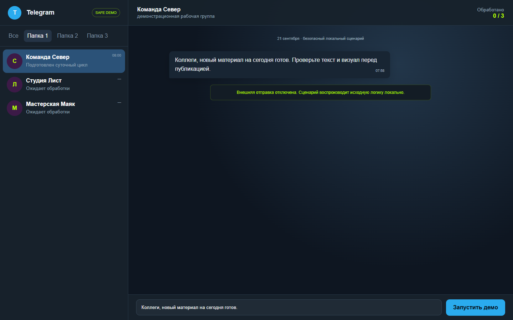
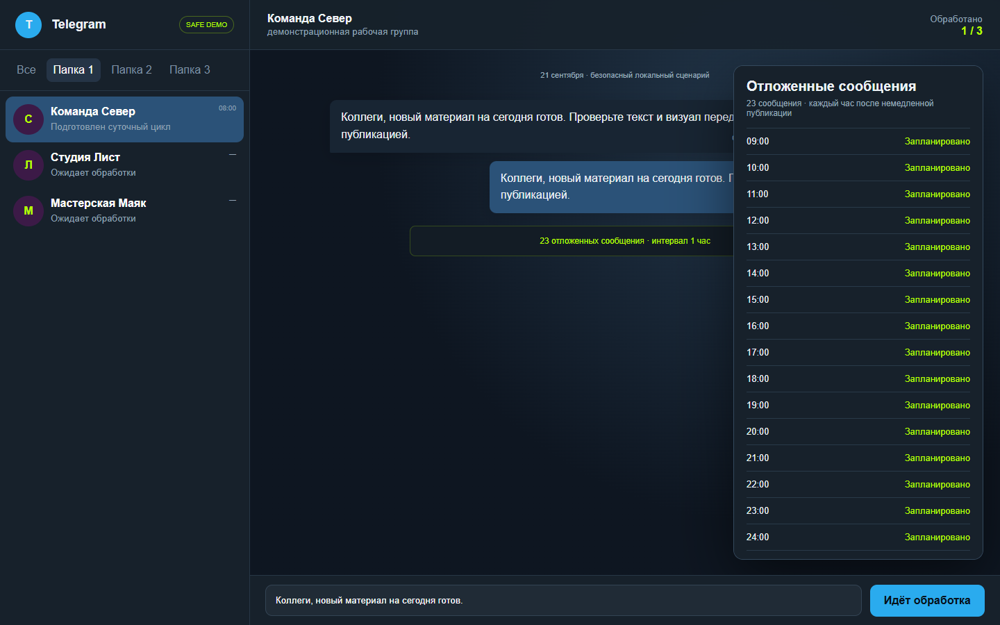
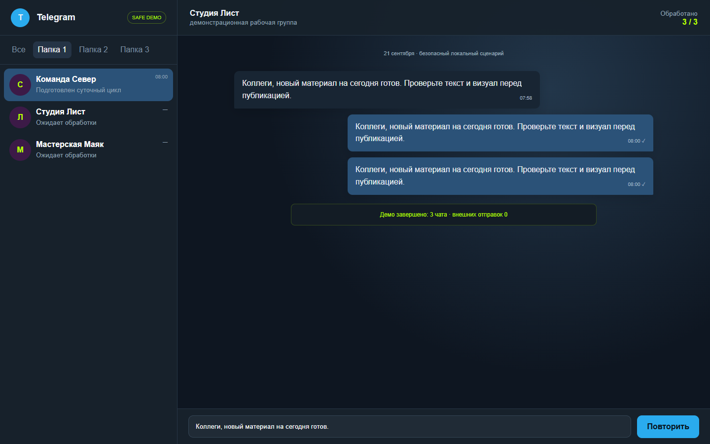

ORIGINAL: Python/Playwright orchestration для Telegram Web. VERIFIED: исходная функция и 48 операций на двух тестовых группах. DEMO: обезличенный Telegram UI и локальные адаптеры; сеть, авторизация и внешняя отправка отключены.